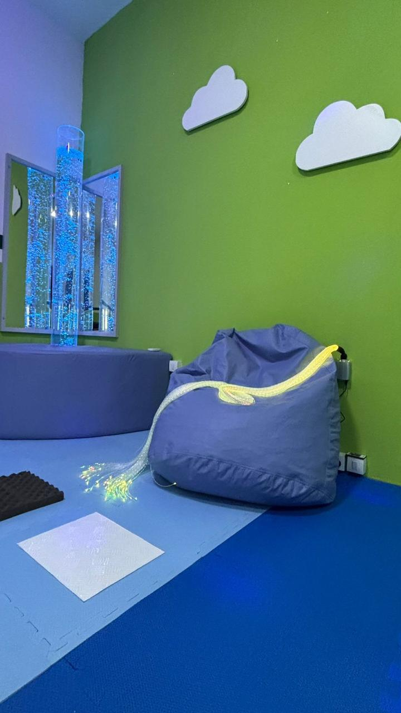
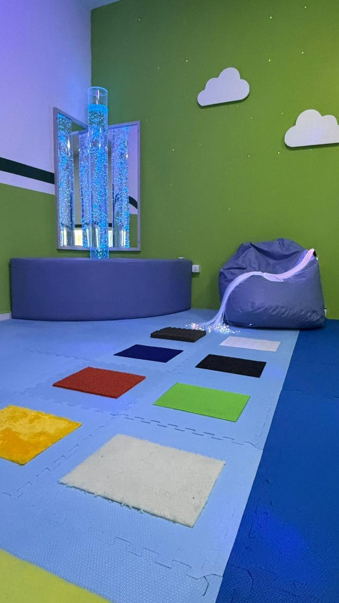

Atas de registro de preços
Compre por adesão, sem abrir nova licitação
Conheça nossas atasCada solução abaixo já está registrada em ata homologada. Sua equipe adere, recebe a documentação pronta e a Atto entrega, monta e treina.
A adesão depende da ata aplicável, da autorização do órgão gerenciador, da vigência, da disponibilidade de saldo e da análise do órgão interessado. Conteúdo informativo; não substitui parecer jurídico.
Servidores · Uniformes profissionais
Cada equipe da prefeitura com o uniforme da sua função
Da urgência à limpeza urbana, da guarda às obras: catorze lotes registrados, com a especificação técnica de cada função e a identidade do município.

Inclusão · Sala multissensorial
A sala da bagunça vira sala sensorial
Aquele depósito no fim do corredor vira o ambiente onde a criança com autismo consegue se regular e voltar para a aula.
Projetos entregues
A mesma escola, equipada do piso ao uniforme
A mesma escola recebe mobiliário novo, uniforme para os alunos e playground com piso certificado. Um projeto por vez, com prazo e responsável definidos.
Boa ideia vira entrega quando existe ata na mão, prazo em contrato e um responsável com nome.



Adesão a ata de registro de preços
Sua equipe adere. A gente entrega, monta e treina.
Sem abrir novo processo licitatório e sem custo para montar o projeto.
Solicitar projeto
Conte a realidade do município
A equipe analisa a demanda, indica a ata compatível e devolve o projeto com valores, prazo e documentação de adesão.
Solicitação enviada
A equipe responde em até um dia útil com a ata compatível e o próximo passo.